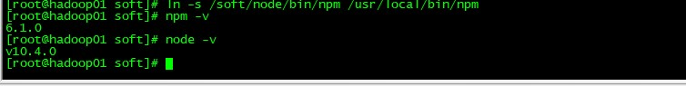
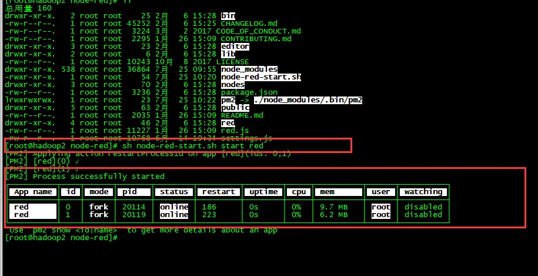
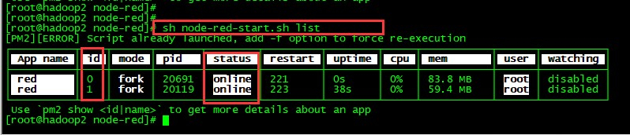
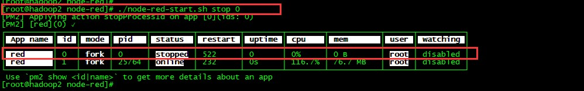
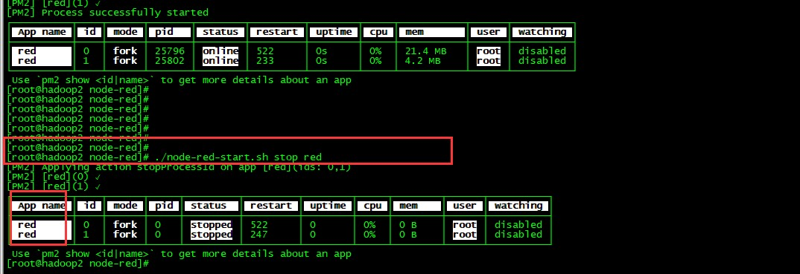
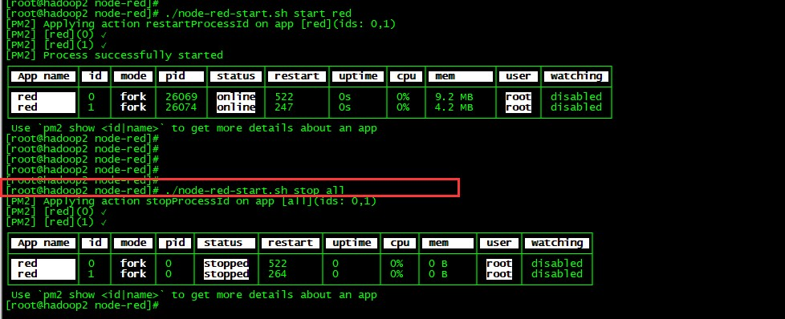
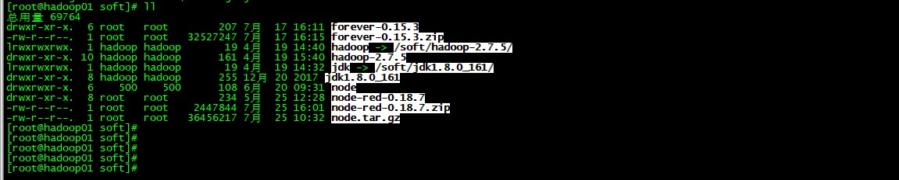
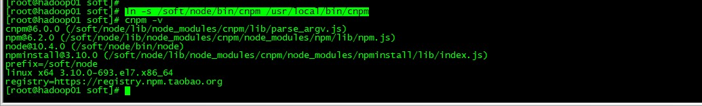

1、基础环境
(1)NodeJS下载安装
下载地址：https://nodejs.org/en/download/
(2)检验是否安装成功
在Root权限下操作：
ln -s /nodejs路径/bin/node /usr/local/bin/node
ln -s /nodejs路径/bin/node /usr/local/bin/npm
使用node -v 和 npm -v查看是否安装成功。

2、node-red 部署
(1)部署过程
上传提供的编译过的node-red应用，启动其中的脚本。启动命令：sh node-red-start.sh start red

查看应用状态：sh node-red-start.sh list

停止应用：sh node-red-start.sh stop id|name
①根据id停止

②根据name停止

③停止所有应用：sh node-red-start.sh stop all

2、node-red 自动化部署的构建过程
(1)部署要求
Linux 主机下安装好node 环境
该Linux主机可以连接外网
安装编译工具及库文件：yum -y install make zlib zlib-devel gcc-c++ libtool openssl openssl-devel
(2)node-red下载
下载地址：https://github.com/node-red/node-red/releases/tag/0.18.7 。将下载好的node-red从本地上传到主机
(3)解压node-red
使用命令：tar -zxcf node-red-0.18.1.tar

(4)下载node-red需要的依赖包
①安装cnpm命令
由于nodejs 自带的npm 命令为国外镜像所以下载过程中可能会出现失败，
所以推荐安装国内镜像命令cnpm.执行如下操作即可：
npm install -g cnpm --registry=https://registry.npm.taobao.org
同时把cnpm 命令添加到环境变量目录下
ln -s /nodeJs目录/bin/cnpm /usr/local/bin/cnpm
检查 cnpm -v

②node-red依赖下载并编译
NodeJs 安装
下载 、解压
Root 权限下操作
ln -s /nodejs路径/bin/node /usr/local/bin/node
ln -s /nodejs路径/bin/node /usr/local/bin/npm
检验node 安装是否成功
node -v
npm -v